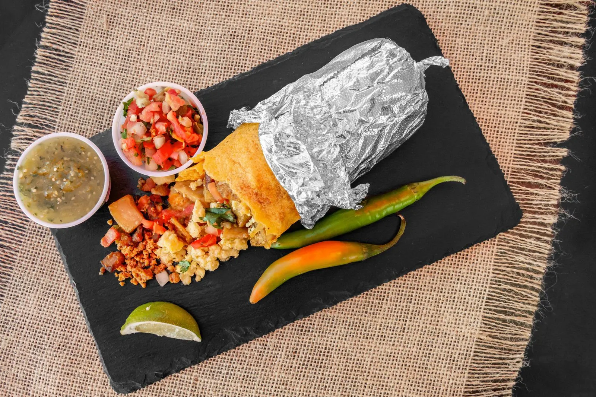
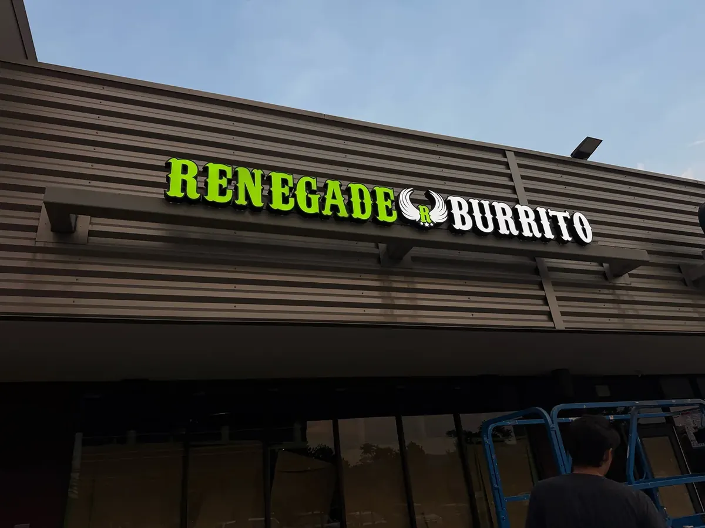
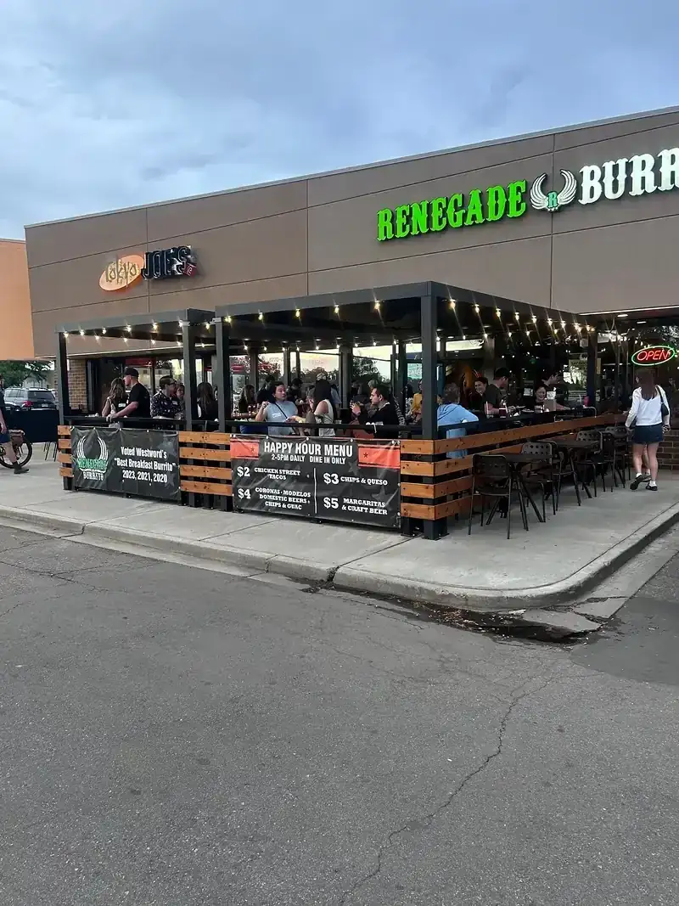

Franchise opportunities
Build your future with Renegade Burrito
Discover the opportunity to bring Renegade Burrito's bold flavors and fresh approach to fast-casual Mexican dining to new communities.
Investment at a glance
See the full investment breakdown →- Initial franchise fee
- $35,000
- Estimated initial investment
- $389,500 – $831,000
- Royalty
- 5% of gross sales
- Marketing contribution
- 4% of gross sales
Standard restaurant, from the Franchise Disclosure Document (Items 5, 6 and 7). Renegade Burrito does not make financial performance representations.
In the news



The brand
Fresh, bold, and built from the franchisee's side of the table
Before they created Renegade Burrito, Brad and Tiffani Harris spent years as restaurant franchise owners. They built the brand around what they know matters to the people running the restaurant.
Made-to-order burritos, bowls, and street tacos. Breakfast burritos all day. Food made fresh in-house. A Denver-metro following that has grown since the first restaurant opened in Westminster in 2017.
Why Renegade
What you get to build
A franchise for operators who lead from the front
A menu guests come back for
Burritos, bowls, tacos, nachos, and an all-day breakfast menu that gives the restaurant more reasons to be busy.
Founders who've been franchisees
Co-founder Brad Harris has owned and operated 50 restaurants across 7 national and regional franchise brands over 30 years.
Formats to explore
Standard restaurants of about 1,600 to 2,400 sq ft in strip centers or stand-alone buildings. Non-traditional formats may also be offered.
The path
How the process works
Submit an inquiry
Tell us about yourself and the market you have in mind. It takes a few minutes.
Introductory call
A member of our franchise team will reach out to talk through your goals and answer questions.
Review the FDD
Qualified candidates receive our Franchise Disclosure Document, with time to review it with an attorney and advisors.
Discovery Day
Meet the leadership team, spend time in a restaurant, and see the operation up close.
Decision and onboarding
If it's the right fit for both sides, we move to agreement, site selection, and training.
Typical timeline: about 9 to 12 months from starting your site search to opening, depending on the site, lease, financing, permits and build-out (FDD Item 11).


Next step
Ready to talk about franchise ownership?
Start with a short inquiry. A member of our franchise team will follow up to learn about your goals.